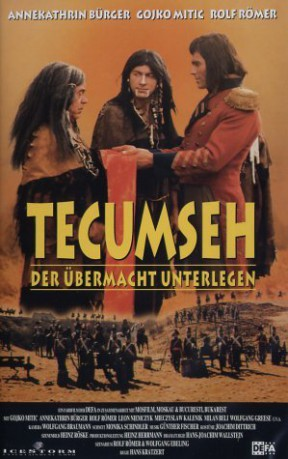

#2420 Tescumseh - Der Übermacht unterlegen
Alternativ: Tecumseh
 
 IMDB-Wertung: 5.8 / 10
IMDB-Wertung: 5.8 / 10  Metascore: 0
Metascore: 0 
At the beginning of the 19th century, white settlers regularly make and break treaties with the Native American inhabitants to gain possession of vast hunting grounds at ludicrously low prices without any bloodshed. Harrison, Governor of Indiana, has made and broke no less than fifteen such treaties, driving increasing numbers of Indians out to the infertile West. To put a stop to this criminal practice, the Shawnee Chief Tecumseh tries to unite the Native Americans. In 1811, he founds a tribal alliance and has Native American lands declared communal property. Chiefs who sell their land in spite of this agreement are to be killed. During the chief's absence, however, Harrison raids the "sacred city" of Tippecanoe founded by Tecumseh and his supporters, reducing it to ashes. The few survivors of the bloodbath flee to Canada, where they join forces with the English as they wage war against America. But they, too, fail to keep their promise to Tecumseh concerning an independent Indian ...
Jahr: 1972
Dauer: 109 Minuten
FSK: 12
Land: Ost-Deutschland Studio: VEB Progress Film-VertriebTonspuren:
Untertitel:
Auflösung: 1080p (1920x816) Größe: 6717 MB
Genre: Western
Regisseur: Hans Kratzert
Drehbuch: Wolfgang Ebeling, Rolf Römer, Hans-Joachim Wallstein
Soundtrack: Günther Fischer
Darsteller:
 Oleg Vidov als Elliot
Oleg Vidov als Elliot Gojko Mitic als Tecumseh
Gojko Mitic als Tecumseh- Annekathrin Bürger als Eileen
- Rolf Römer als Simon McKew
- Leon Niemczyk als McKew
- Mieczyslaw Kalenik als General Brook
- Milan Beli als Raffael
- Wolfgang Greese als Governor William Harrison
- Gerry Wolff als Newman
- Rolf Ripperger als Barry
- Helmut Schreiber als Colonel Procter
- Herbert Köfer als Mac
- Rudolf Ulrich als O'Brian
- Fritz Links als Aldington
- Minja Vojvodic als Black Eagle
- Maciej Rayzacher als Wanata
- Mincho Nikolov als Red Hawk
- Werner Hahn als Logan
- Hans-Peter Pieper als Crane
- Joe Schorn als Round Head
- Gerd Funk als Parker
- Wilfried Pucher als Ellis
- Dirk Jungnickel als Weatherford
- Wilfried Zander als Kish-Kalva
- Myriam Ayache als Walagua
- Ingeborg Krabbe als Mrs. O'Brian
- Horst Kube als Old Hunter
- Sepp Klose als Tenskwatawah Winnemak
- Gabriele Lohmar-Hartmann als Junge Magd
- Fred Alexander als Leather Lip
- Klaus Gehrke als Second Man
- Walter Issberner als Mitshikanawa
- Arnim Mühlstädt als Doctor
- Günter Schubert als Mediator
- Hannes Schönemann als Sam
- Peter Mau als Walk in the Water
- Harald Fischer als Soldier , uncredited
- Winfried Glatzeder als Patterson , uncredited
- Jürgen Hölzel als Bald head , uncredited
- Werner Schmidt-Winkelmann als Clift , uncredited
- Manfred Schück als Bald head , uncredited
- Volker Steinkopff als Ordinance , uncredited
- Ulrich Teschner als Ordinance , uncredited
Datei: X:\HD-Western-Collections\DDR-Western\Tescumseh - Der Übermacht unterlegen (1972, FSK12, 1920x816).mkv seit 09.11.2015
Festplatte: HD Eastern+Western
 Es gibt insgesamt 15 Filme in der Gruppe 'HD-Western-Collections\DDR-Western'
Es gibt insgesamt 15 Filme in der Gruppe 'HD-Western-Collections\DDR-Western'